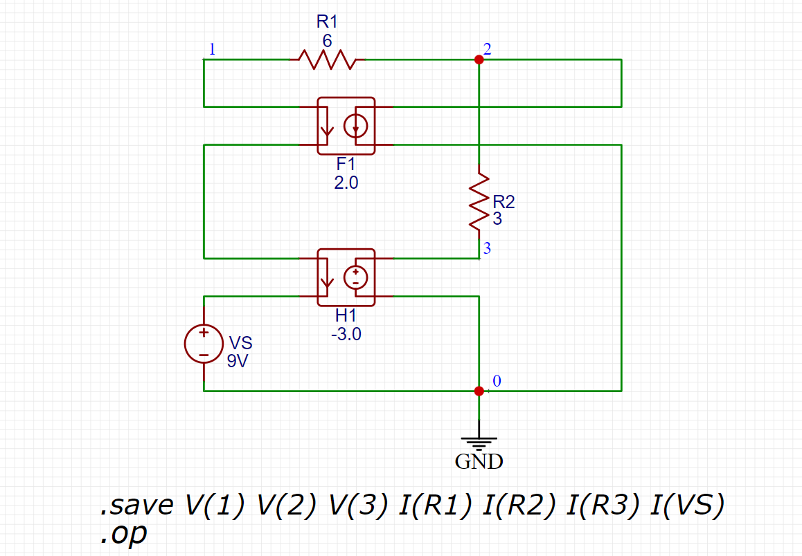
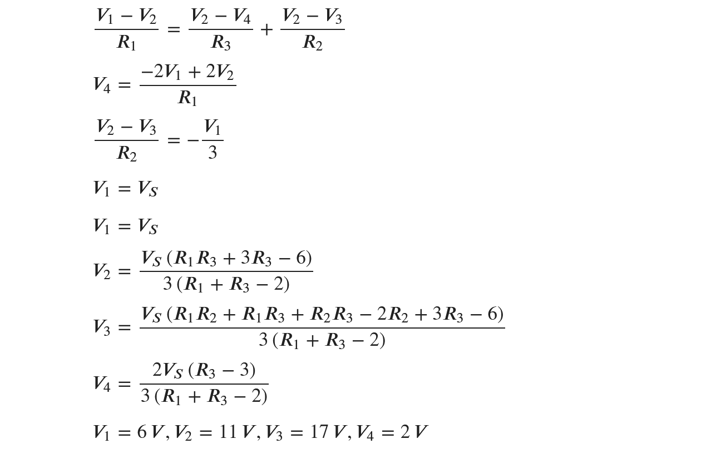

การใช้แหล่งจ่ายไฟฟ้ากระแสตรงและการวิเคราะห์วงจรด้วย EasyEDA#
บทความนี้กล่าวถึง วงจรที่ประกอบด้วยตัวต้านทานและแหล่งจ่ายกระแสตรง (DC Sources) และการวิเคราะห์วงจรในรูปแบบที่เรียกว่า DC Operating Point Analysis โดยใช้ซอฟต์แวร์ EasyEDA ที่มี LTspice ทำหน้าที่เป็นตัวจำลองการทำงานของวงจร (SPICE-based Circuit Simulator)
Keywords: EasyEDA, LTspice, DC Circuit Analysis, Voltage and Current Sources
▷ แหล่งจ่ายไฟฟ้า#
ในทางไฟฟ้า เราสามารถจำแนกแหล่งจ่าย (Sources) ซึ่งเป็นสิ่งที่ให้พลังงานไฟฟ้าภายในวงจร ได้เป็นหลายกรณี เช่น
- แหล่งจ่ายแรงดันไฟฟ้า (Voltage Source) และแหล่งจ่ายกระแสไฟฟ้า (Current Source)
- แหล่งจ่ายอิสระ (Independent Source) และแหล่งจ่ายไม่อิสระหรือแหล่งจ่ายที่ถูกควบคุม ด้วยแรงดันหรือกระแสไฟฟ้าในวงจร (Dependent Source)
- อุปกรณ์ที่ให้แรงดันคงที่ (Constant Voltage Source) เป็นแหล่งจ่ายแรงดันอิสระ
- อุปกรณ์ที่ให้กระแสไฟฟ้าคงที่ (Constant Current Source) เป็นแหล่งจ่ายกระแสอิสระ
- แหล่งจ่ายแรงดันกระแสตรง (DC Voltage Source) และแหล่งจ่ายแรงดันกระแสสลับ (AC Voltage Source)
แหล่งจ่ายแรงดันและกระแสไม่อิสระในทางอุดมคติ แบ่งเป็น 4 กรณี ดังนี้
- แหล่งจ่ายแรงดันที่ขึ้นกับแรงดันควบคุม (Voltage-Controlled Voltage Source: VCVS)
- แหล่งจ่ายแรงดันที่ขึ้นกับกระแสควบคุม (Current-Controlled Voltage Source: CCVS)
- แหล่งจ่ายกระแสที่ขึ้นกับแรงดันควบคุม (Voltage-Controlled Current Source: VCCS)
- แหล่งจ่ายกระแสที่ขึ้นกับกระแสควบคุม (Current-Controlled Current Source: CCCS)
โดยทั่วไปแล้ว ในการวิเคราะห์วงจรไฟฟ้าพื้นฐานกระแสตรง (DC) พบว่ามีการใช้ความสัมพันธ์ระหว่างกระแสไฟฟ้าหรือแรงดันไฟฟ้าควบคุมที่เป็นเชิงเส้น โดยที่ เป็นค่าคงที่ใด ๆ (เป็นอัตราส่วนคงที่) เช่น
- หมายถึง แหล่งจ่ายกระแส ขึ้นอยู่กับแรงดัน ในวงจร
- หมายถึง แหล่งจ่ายกระแส ขึ้นอยู่กับกระแส ในวงจร
- หมายถึง แหล่งจ่ายแรงดัน ขึ้นอยู่กับแรงดัน ในวงจร
- หมายถึง แหล่งจ่ายแรงดัน ขึ้นอยู่กับกระแส ในวงจร
▷ ประเภทของแหล่งจ่ายใน EasyEDA#
ในส่วนที่เป็น Commonly Library ของซอฟต์แวร์ EasyEDA มีประเภทของแหล่งจ่ายให้เลือกดังนี้
- Voltage Sources (ชื่อขึ้นต้นด้วย
V) และ Current Sources (ชื่อขึ้นต้นด้วยI) มีตัวเลือกย่อยในรูปแบบต่าง ๆ เช่นDC= DC ConstantSin= Single-Frequency Sinusoidal SignalPULSE= Pulse (Rectangular Waveform) SignalEXP= Single Pulse with Exponential Rise/FallSFFM= Single-Frequency, Frequency-Modulated Sinusoidal SignalPWL= Piecewise Linear WaveformBehavioral_Source= Behavioral Source
- Dependent Sources ซึ่งเป็นแหล่งจ่ายแบบไม่อิสระ และจำแนกเป็นประเภทย่อยได้ดังนี้
- CCCS
- CCVS
- VCCS
- VCVS
รูป: การเปิดใช้งาน EasyEDA - Schematic Editor
รูป: สัญลักษณ์ทางไฟฟ้าของแหล่งจ่ายประเภทต่าง ๆ ใน EasyEDA
คำแนะนำ: เอกสารสำหรับการใช้งานแหล่งจ่ายใน EasyEDA สามารถศึกษาได้จาก "EasyEDA - Configuring Voltage and Current Sources"
▷ ตัวอย่างที่ 1#
วงจรตัวอย่างแรกประกอบด้วย
- แหล่งจ่ายแรงดันไฟฟ้าคงที่ VS และได้กำหนดค่าให้เป็น 12 V
- แหล่งจ่ายกระแสไฟฟ้าคงที่ IS และได้กำหนดค่าให้เป็น 1 A
- ตัวต้านทาน R1, R2, R3 และได้กำหนดค่าให้เป็น 6 Ω, 3 Ω, 6 Ω ตามลำดับ
รูป: การวาดผังวงจรตัวอย่างด้วย EasyEDA
จากผลการวิเคราะห์วงจรในโหมด DC operating point จะเห็นว่า
- V(1) = แรงดันที่เน็ตหมายเลข 1 เทียบกับ GND ได้เท่ากับ 12 V
- V(2) = แรงดันที่เน็ตหมายเลข 2 เทียบกับ GND ได้เท่ากับ 9 V
- V(3) = แรงดันที่เน็ตหมายเลข 3 เทียบกับ GND ได้เท่ากับ 12 V
- I(Is) = กระแสไฟฟ้าที่ไหลผ่านแหล่งจ่ายกระแส IS ได้เท่ากับ 1A
- I(R1) = กระแสไฟฟ้าที่ไหลผ่าน R1 ได้เท่ากับ 0.5 A
- I(R2) = กระแสไฟฟ้าที่ไหลผ่าน R2 ได้เท่ากับ -1.0 A
- I(R3) = กระแสไฟฟ้าที่ไหลผ่าน R3 ได้เท่ากับ 1.5 A
รูป: รายการ SPICE netlist ของวงจร และผลการวิเคราะห์วงจร
หากวิเคราะห์วงจรโดยใช้ทฤษฎีทางไฟฟ้า KCL เพื่อเปรียบเทียบผลลัพธ์ที่ได้จากการใช้ซอฟต์แวร์ ก็มีแนวทางดังนี้
จากสมการข้างบน จะสามารถหา , และ ได้ดังนี้
กระแสไฟฟ้าที่ไหลผ่านตัวต้านทาน โดยให้มีทิศทางจากขา 1 ไปยังขา 2 ของตัวต้านทานแต่ละตัว สามารถคำนวณได้ดังนี้
▷ ตัวอย่างที่ 2#
วงจรในตัวอย่างที่ 2 ประกอบด้วย
- ตัวต้านทาน R1 และ R2 ซึ่งได้กำหนดค่าได้เป็น 6 Ω และ 3 Ω ตามลำดับ
- แหล่งจ่ายแรงดันอิสระ VS กำหนดค่าให้เป็น 9V
- แหล่งจ่ายแรงดัน H1 ที่ขึ้นกับกระแสควบคุม (ใช้คอมโพเนนต์ CCVS_2 ในไลบรารีของ EasyEDA)
- แหล่งจ่ายกระแส F1 ที่ขึ้นกับกระแสควบคุม (ใช้คอมโพเนนต์ CCCS_2 ในไลบรารีของ EasyEDA)
ในตัวอย่างนี้ ได้กำหนดให้ I(VS) เป็นกระแสที่ไหลผ่านแหล่งจ่าย VS และกำหนดให้มีทิศทางการไหลจากขั้วบวกไปยังขั้วลบของแหล่งจ่าย และกำหนดให้
- H1 สร้างแรงดันไฟฟ้าเท่ากับ I(VS) คูณด้วย -3 (หน่วยเป็น V/A)
- F1 สร้างกระแสไฟฟ้าเท่ากับ I(VS) คูณด้วย 2 (ไม่มีหน่วย)
รูป: การวาดผังวงจรตัวอย่างด้วย EasyEDA
จากผลการวิเคราะห์วงจรด้วย EasyEDA จะเห็นได้ว่า
- V(1) ได้เท่ากับ 9 V
- V(2) ได้เท่ากับ 6 V
- V(3) ได้เท่ากับ 1.5 V
- I(VS) ซึ่งเป็นกระแสไฟฟ้าไหลที่ผ่านแหล่งจ่าย VS ได้เท่ากับ -0.5 A เป็นต้น
ข้อสังเกต:
- H1 และ F1 เป็นแหล่งจ่ายที่ขึ้นอยู่กับกระแสที่ไหลผ่านแหล่งจ่าย VS ในวงจร ดังนั้น SPICE directive สำหรับกำหนดคุณสมบัติของอุปกรณ์ดังกล่าว จึงต้องมีข้อความที่ระบุว่า แหล่งจ่ายนี้ขึ้นอยู่กับปริมาณทางไฟฟ้าของแหล่งจ่ายใด ในกรณีนี้คือ VS แล้วตามด้วยค่าคงที่หรือตัวคูณที่เป็นเลขจำนวนเต็มหรือเลขทศนิยม
- V(1), V(2) และ V(3) เป็นแรงดันไฟฟ้าเทียบกับ GND สำหรับจุดหรือเน็ตที่หมายเลขอ้างอิง 1, 2 และ 3 ในวงจร
รูป: รายการ SPICE netlist ของวงจร และผลการวิเคราะห์วงจร
ในการวิเคราะห์วงจรด้วยทฤษฎีทางไฟฟ้าได้ใช้สัญลักษณ์ดังต่อไปนี้
- = กระแสที่ไหลผ่าน VS ซึ่งเป็นแหล่งจ่ายแรงดันคงที่
- = กระแสที่ไหลผ่าน F1 ซึ่งเป็นแหล่งจ่ายประเภท CCCS
- = แรงดันตกคร่อมของ H1 ซึ่งเป็นแหล่งจ่ายประเภท CCVS
เมื่อจัดรูปของสมการใหม่ จะได้ผลดังนี้
การใช้แหล่งจ่าย CCVS_2 และ CCCS_2 ของ EasyEDA / LTspice มีจำกัด คือ กระแสควบคุมจะต้องเป็นกระแสที่ไหลผ่านแหล่งจ่ายแรงดันไฟฟ้าเท่านั้น ลองมาเปรียบเทียบการใช้งาน แหล่งจ่าย CCVS และ CCCS สำหรับ H1 และ F1 ตามลำดับ ในรูปวงจรต่อไปนี้

รูป: การวาดผังวงจรตัวอย่างด้วย EasyEDA เมื่อเปลี่ยนมาใช้ CCVS และ CCCS
ข้อดีของการใช้งาน CCVS และ CCCS คือ เราสามารถเลือกกระแสไฟฟ้าในส่วนใดของวงจรเป็นกระแสควบคุมได้ แต่ก็มีข้อเสียคือ ขาคู่ด้านซ้ายสำหรับวัดกระแสที่ไหลผ่านกับขาคู่ด้านขวาสำหรับใช้เป็นแหล่งจ่ายของอุปกรณ์เดียวกันจะแยกกันไม่ได้
▷ ตัวอย่างที่ 3#
อุปกรณ์ที่เป็นแหล่งจ่ายอีกประเภทหนึ่ง เรียกว่า Behavioral Source ซึ่งมีให้เลือกทั้งแบบที่เป็นแรงดันควบคุมหรือกระแสควบคุม และสามารถกำหนดความสัมพันธ์ระหว่างอินพุตและเอาต์พุตของอุปกรณ์โดยใช้สูตรคณิตศาสตร์ได้ ถัดไปมาดูตัวอย่างการใช้งานแหล่งจ่ายประเภทนี้
วงจรตัวอย่างนี้ประกอบ
- ตัวต้านทาน R1,R2,R3 ซึ่งได้กำหนดค่าได้เป็น 5 Ω 3 Ω 9 Ω ตามลำดับ
- แหล่งจ่ายแรงดันอิสระ VS กำหนดค่าให้เป็น 6V
- แหล่งจ่ายแรงดัน BV ที่ขึ้นกับแรงดันควบคุม (ใช้คอมโพเนนต์ Behavioral Voltage Source ในไลบรารีของ EasyEDA) โดยให้ V = -2*I(R1) และ I(R1) เป็นกระแสที่ไหลผ่านตัวต้านทาน R1
- แหล่งจ่ายกระแส BI ที่ขึ้นกับกระแสควบคุม (ใช้คอมโพเนนต์ Behavioral Current Source ในไลบรารีของ EasyEDA) โดยให้ I = -V(1,0)/3 และ V(1,0) เป็นผลต่างของแรงดันไฟฟ้าที่จุด 1 และ 0 (GND) ซึ่งเท่ากับแรงดันตกคร่อมที่แหล่งจ่าย VS
รูป: การวาดผังวงจรตัวอย่างด้วย EasyEDA
รูป: รายการ SPICE netlist ของวงจร และผลการวิเคราะห์วงจร
การวิเคราะห์วงจรด้วยทฤษฎีทางไฟฟ้า มีแนวทางดังนี้ โดยให้ เป็นตัวแปรที่ไม่ทราบค่า (Unknowns) และเป็นแรงดันไฟฟ้าเทียบกับ GND ตามจุดอ้างอิงในผังวงจร
ในการหาผลเฉลยของระบบสมการเชิงเส้น เราลองมาดูตัวอย่างการเขียนโค้ดด้วย Python และใช้โมดูล SymPy ในการประมวลผลเชิงสัญลักษณ์ เพื่อหาคำตอบสำหรับ
from sympy import *
from IPython.display import display, Math
# declare symbols for circuit parameters
R1,R2,R3 = symbols("R_1 R_2 R_3", positive=True)
VS,V1,V2,V3,V4 = symbols("V_S V_1 V_2 V_3 V_4")
eq1 = Eq( (V1-V2)/R1, (V2-V3)/R2 + (V2-V4)/R3 )
eq2 = Eq( V4, (-2)*(V1-V2)/R1 )
eq3 = Eq( (V2-V3)/R2, -Rational(1,3)*V1 )
eq4 = Eq( V1, VS )
eqn_sys = [eq1, eq2, eq3, eq4]
unknowns = [V1,V2,V3,V4]
# show the equations
for eq in eqn_sys:
display( eq )
# solve the linear equation system
sol = solve( eqn_sys, unknowns )
# show the expressions for V1,...,V4
for k,v in sol.items():
display( Math(latex(k) + '=' + latex(simplify(v))) )
# substitute V1,...,V4 with numeric values
params = {VS:6,R1:5,R2:3,R3:9}
t = ''
for k,v in sol.items():
t += latex(k) + '=' + latex(v.subs(params)) + '\,V,'
display( Math(t[:-1]) )

รูป: เอาต์พุตจากโค้ด Python ที่แสดงผลเฉลยของระบบสมการเชิงเส้น
▷ กล่าวสรุป#
บทความนี้นำเสนอ ตัวอย่างการใช้งานแหล่งจ่ายในวงจรดีซี การวิเคราะห์และจำลองการทำงานของวงจร โดยใช้ซอฟต์แวร์ EasyEDA
This work is licensed under a Creative Commons Attribution-ShareAlike 4.0 International License.
Created: 2022-05-01 | Last Updated: 2022-05-02